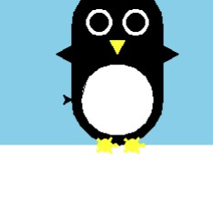
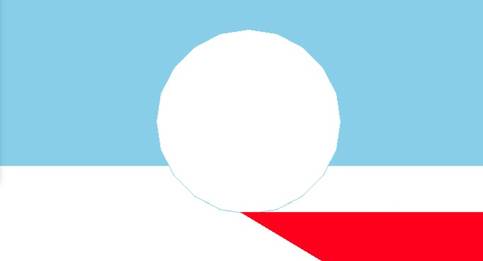
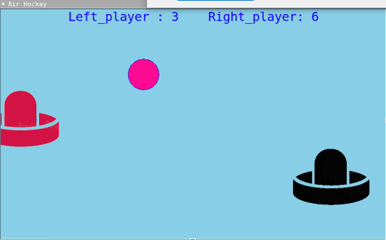
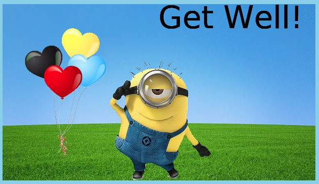

Home
Portfolio
About Me
This is my Portfolio Page!

PLTW 1.1.9 "Penguin Dying Project".


This is a penguin simulator. We were able to use turtle to make a circle look like a snowball and we used forward motion so it hits the penguin. The penguin stands on the ice and gets crushed.
Using App Inventor to make app game Duck Hunter.
PLTW 1.2.5 "Airhockey" project

This is a airhockey game very similar to ping pong. we were able to use turte to create variables in order to make the puck move back and fourth whenever you hit it with the paddle and create a score board.
PLTW 1.3.1 "Minion Theme Card" project

We were able to use our knowledge on variables and abstractions to make the minion jump up and down and have the user be able to interact with the baloons.A get well text was also imput on the top right.
Using netlogo do remix of illusions.
Interactive Fiction Rags to Riches.